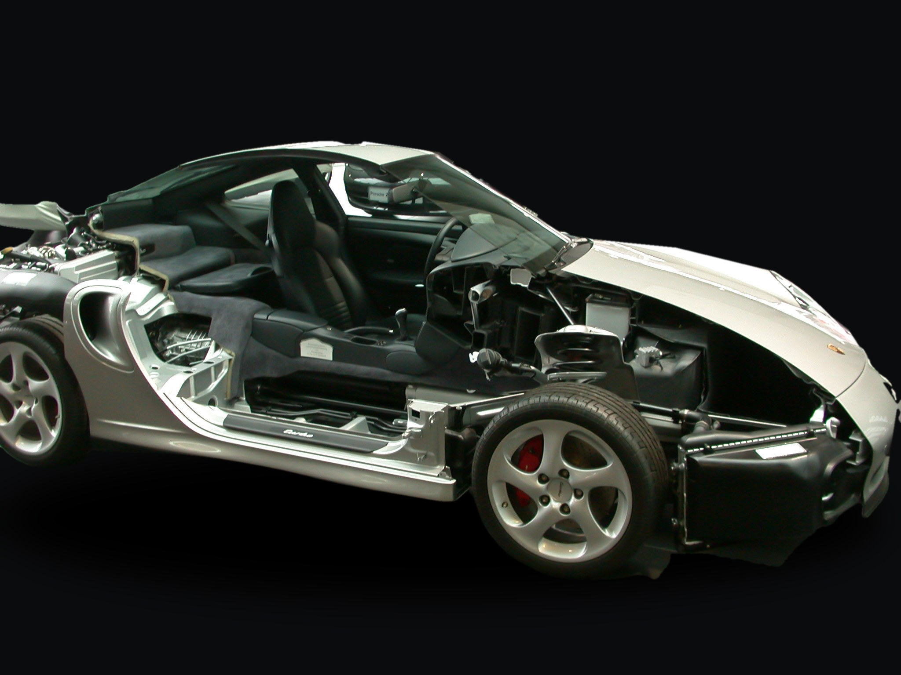
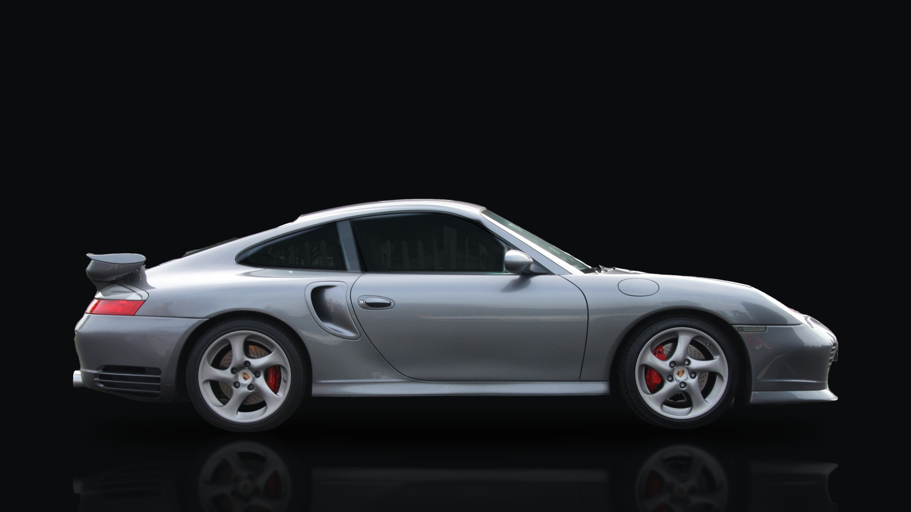

Активная и пассивная
безопасность
Выполнила: Каменская Ульяна, 214
Porsche 911 снаружи. Откройте разрез, чтобы увидеть, что защищает людей внутри.


Выполнила: Каменская Ульяна, 214
Porsche 911 снаружи. Откройте разрез, чтобы увидеть, что защищает людей внутри.